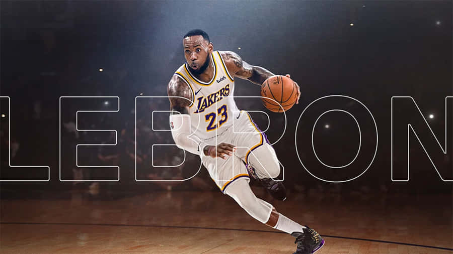

Biografía de LeBron James
- Fecha de nacimiento: 30 de diciembre de 1984
- Lugar de nacimiento: Akron, Ohio, Estados Unidos
- Altura y peso: 2.06 metros, 113 kg
- Posición: Alero / Base
- Equipo actual: Los Angeles Lakers

Trayectoria Deportiva
Inicios
LeBron James se destacó desde la secundaria en St. Vincent-St. Mary High School.
- Considerado uno de los mejores prospectos en la historia del baloncesto.
- Fue la primera selección del Draft de la NBA en 2003 por los Cleveland Cavaliers.
Carrera Profesional
Ha jugado en tres franquicias: Cleveland Cavaliers, Miami Heat y Los Angeles Lakers.
- Ganador de 4 campeonatos de la NBA.
- Múltiple MVP de temporada regular y de finales.
- Máximo anotador histórico de la NBA (superó a Kareem Abdul-Jabbar en 2023).
Vida Personal y Legado
- Fundador de la "I PROMISE School" en su ciudad natal, Akron.
- Padre de Bronny James, también jugador profesional.
- Figura destacada dentro y fuera de las canchas.